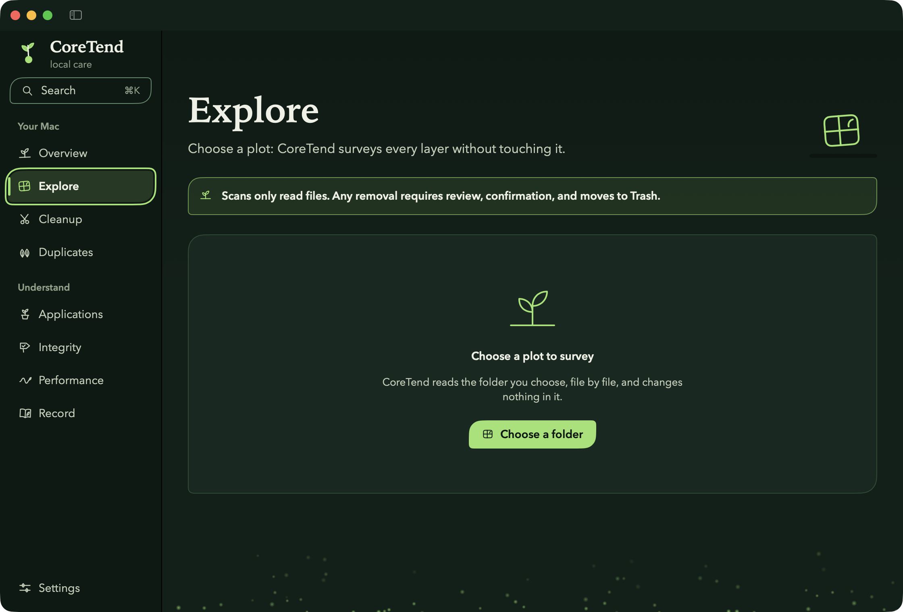
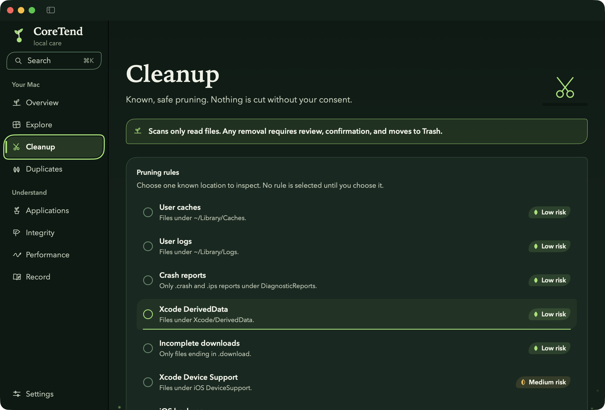
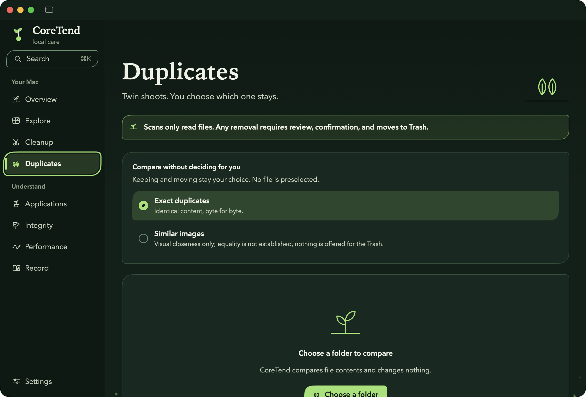
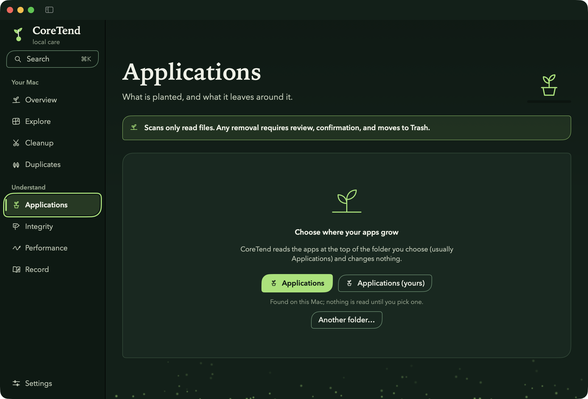
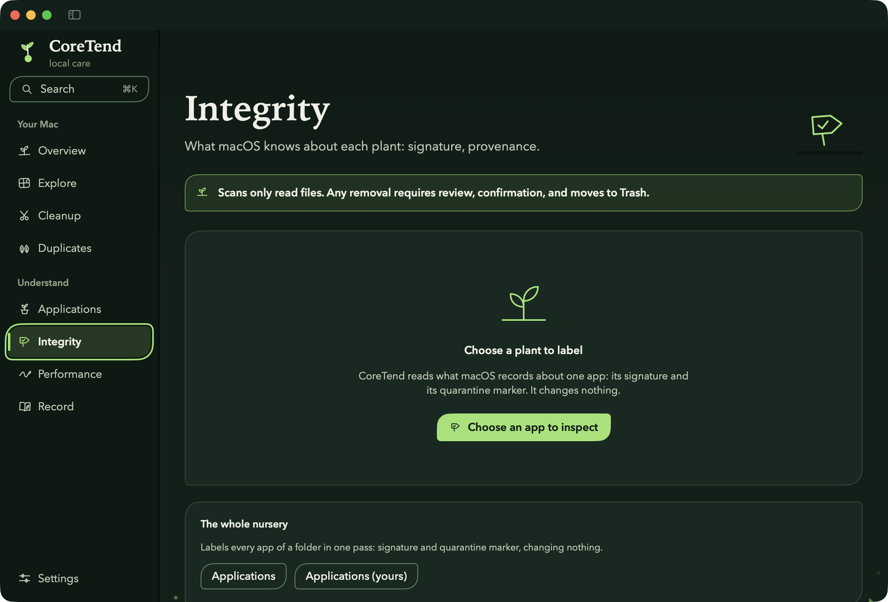
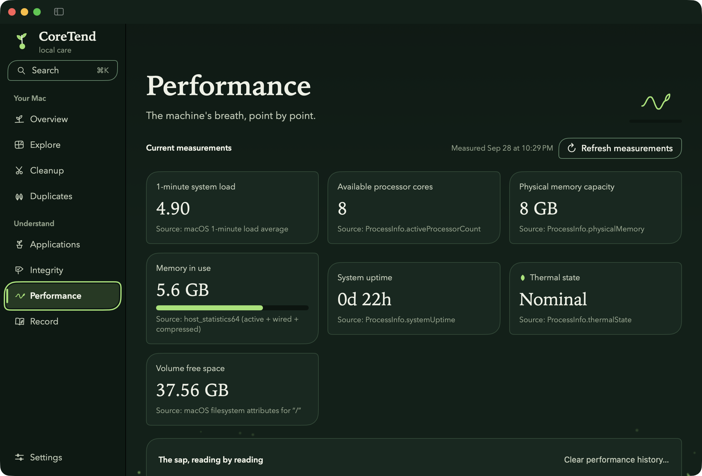
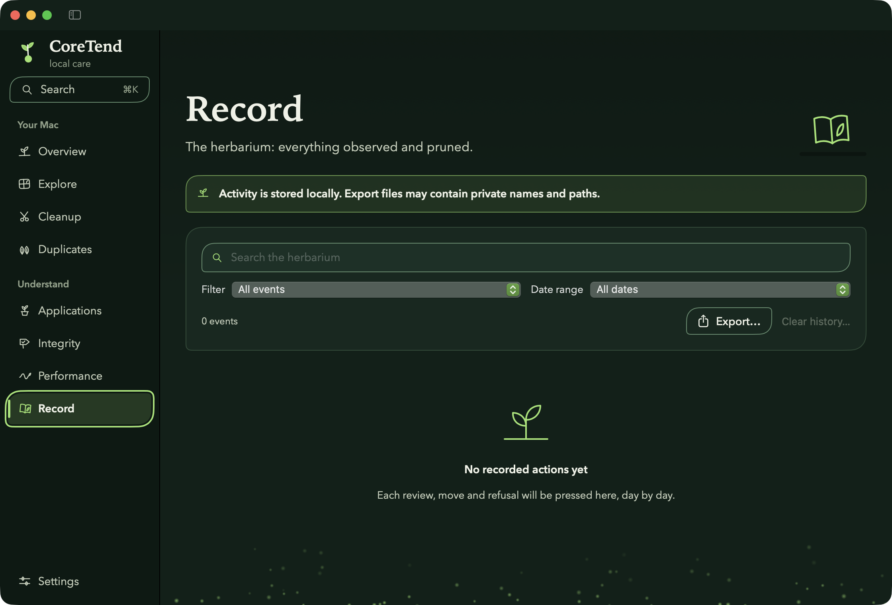

⌘K search
Jump to any tool or setting from a field that grows out of the sidebar.
Features
Every tool reads first and explains what it measured. Moving anything takes your selection, a review and a confirmation.
Overview
Free space measured by macOS, the soil band of your volume, the last things CoreTend did and why, and paths into every tool.

Explore
Choose a folder: CoreTend reads it without touching it, then shows every file and subfolder as a plot sized by what it takes. Walk into subfolders, search, sort, preview.

Cleanup
Seven rules for known places — caches, logs, crash reports, Xcode data, unfinished downloads, iOS backups — each with its risk said plainly. Nothing is selected for you.

Duplicates
Exact copies found by content, with the space keeping one would free. You choose which copy stays; that one can never be moved. Similar images are shown as pairs, for you to judge.

Applications
Every app of a folder with its icon, version and real size; sort by size; files around an app matched by name, never claimed as proof. Move one app bundle to the Trash after review.

Integrity
What macOS records about an app — signature, quarantine marker — one label per signal, or a whole folder in one pass. Signals, never a verdict on safety.

Performance
System load, memory in use, thermal state and more, each with its source, and the load drawn over time. Readings are taken when you look, never in the background.

Record
Everything observed and moved, one page per day. Search it, export it to CSV or JSON, or clear it — it stays on your Mac.

Jump to any tool or setting from a field that grows out of the sidebar.
Optional: free space, memory and load at a glance, and every tool one click away.
Import recognised preferences and exclusions from a 1.x copy; the source stays intact.
A read-only command-line tool scans a folder you name and reads the history.